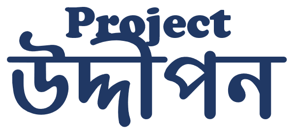

verified
Partnership Portfolio
Prepared for Partners & Sponsors

Building thinkers, makers, and problem-solvers.
Program Report & Partnership Portfolio
A nationwide STEM, Robotics & AI outreach initiative by ZAN Tech —
mission, impact, program design and partnership opportunities.
Prepared by ZAN Tech
·
·
projectuddipon.zantechbd.com
Section 01 — Overview
Executive Summary
Project Uddipon is a nationwide STEM (Science, Technology, Engineering,
Mathematics) outreach initiative designed to bridge the critical gap between
academic theory and industrial application in Bangladesh. Powered by
ZAN Tech, the project targets rural and underserved
students — specifically prioritizing female participation — to build a
future-ready workforce skilled in Robotics, IoT, and AI.
- Current Traction: Successfully trained 500+ students across 5 institutions in the pilot phase (Feni & Dhaka).
- Goal: Establish 150+ STEM Clubs and train 100,000+ students across 64 districts within 3 years.
- Key Differentiation: We do not just "teach"; we build permanent STEM communities (Clubs) to ensure sustainable learning beyond the workshop.
Problem Statement
Despite the future Bangladesh vision, rural education faces a "Hardware Divide":
- Lack of Labs: 80% of rural schools lack functional robotics/IoT labs.
- The Gender Gap: Female participation in technical engineering fields remains critically low due to a lack of early exposure and role models.
- Curriculum Lag: Students graduate with theoretical knowledge but zero experience in Industry 4.0 tools (Arduino, Sensors, AI models), leaving them unemployable in the modern tech sector.
Section 02 — Program Model
The Solution: Project Uddipon
We deploy a 5-step "Ignition Model" that transforms a standard classroom
into a hub of innovation:
- Phase 1 — Hands-on Workshops: Direct training on Line-following Robots, Obstacle Avoidance, and IoT Home Automation.
- Phase 2 — "Girls-in-Tech" Focus: Dedicated sessions for female students to ensure safe, supportive learning environments (achieved 30–50% female participation in pilots).
- Phase 3 — STEM Club Formation: We don't just leave; we set up a "Uddipon STEM Club" with starter kits and manuals to keep them building.
- Phase 4 — Teacher Training (ToT): Empowering local teachers to run the labs independently.
- Phase 5 — National Grid: Connecting these rural clubs to a central online platform for hackathons and advanced mentorship.
Impact & Validation (The Pilot)
- Locations Covered: Feni Govt. College, Sharishadi High School, Sonagazi Girls' Pilot High School, Scholastica (Dhaka).
- Beneficiaries: 500+ students trained directly.
- Engagement: Average of 80–110 participants per session.
- Outcome: Students successfully built working prototypes of IoT weather stations and autonomous bots during the sessions.
Section 03 — Partnership Rationale
Strategic Alignment (Why Partner With Us?)
For Corporate Sponsors (CSR Targets)
- Brand Visibility: Your logo on 100,000+ student certificates, T-shirts, and robot kits across 64 districts.
- Talent Pipeline: Early access to the brightest young engineering minds in Bangladesh before they even hit the job market.
For NGOs & Development Agencies
-
SDG Alignment:
- SDG 4 (Quality Education): Practical technical skills.
- SDG 5 (Gender Equality): Specific KPI for 40%+ female participation.
- SDG 8 (Decent Work): Preparing youth for high-income tech careers.
- SDG 10 (Reduced Inequalities): Giving rural students the same tools and opportunities as city students.
- Rural Access: We go where others don't — focusing on Tier-2 and Tier-3 cities (Feni, etc.) rather than just Dhaka.
Section 04 — Program Design
Program Modules
We have structured our workshops into two specialized tiers to maximize
engagement and learning.
Module 1: The "Spark" Seminar (Classes 6–8)
- Focus: Inspiration and Awareness.
- Duration: 2–3-hour session.
-
Key Activities:
- Tech Showcase: Demonstrating AI, IoT, and Robotic devices to ignite curiosity.
- Inspiration Talk: Explaining the global impact of technology.
- Interactive Quiz: A short session to test observation skills.
- Recognition: Prize-giving ceremony for top participants.
Module 2: The "Innovator" Workshop (Classes 9–12)
- Focus: Hands-on Application and Engineering Logic.
- Duration: 2–3-hour session.
-
Key Activities:
- Project Demonstrations: Showcasing functional builds like Line Follower Robots (LFR), CanSats, and RC Cars.
- Technical Deep-Dive: Explaining hardware-software integration.
- Robotic Activity: Live demonstrations of sensor-based logic.
- Advanced Quiz: Technical assessment with excellence awards.
Long-Term Support Ecosystem
Project Uddipon is committed to the "Lifetime Success" of our participants:
- Resource Funding: Assisting underprivileged students with essential sensors and hardware accessories.
- Continuous Mentorship: Guiding to ensure students stay on track toward a career in technology.
- National Vision: Building a community of experts who will represent Bangladesh on the global stage.
Section 05 — Pilot Results
Pilot Implementation
Regions Covered: Feni, Sylhet, Dhaka
Institutions Engaged
Analytics
- Identified high-potential students for mentorship.
- Connected students with local science clubs.
- Introduced AI, ML, and IoT concepts to rural communities.
How We Work
Section 07 — Our Team
Conducted List
Project Uddipon is led by ZAN Tech engineers, founders, and volunteers:
precision_manufacturingRobotics Engineers
codeSoftware Developers
settings_suggestAutomation Specialists
schoolSTEM Educators
campaignOutreach & Documentation
Section 08 — Roadmap & Contact
Long Term Target
Project Uddipon aims to:
- Reach 100,000+ students within 3 years.
- Cover all 64 districts of Bangladesh.
- Enable 40%+ female participation.
- Establish 150+ STEM clubs.
- Build a national skill pipeline for Robotics, IoT, and AI.
Partnership Value
Organizations choose to support Project Uddipon because:
- It is scalable, low-cost, and high-impact.
- It directly supports SDGs (Quality Education, Gender Equality, Decent Work, Industry Innovation).
- It builds the future workforce Bangladesh urgently needs.
- It benefits industries, communities, and national development.
- It is run by a professional engineering company with both commercial and social expertise.
Contact Information